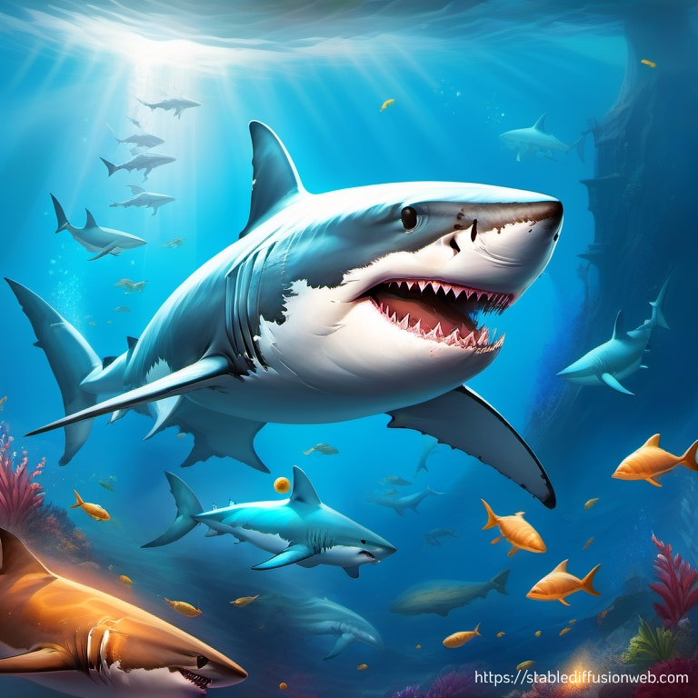
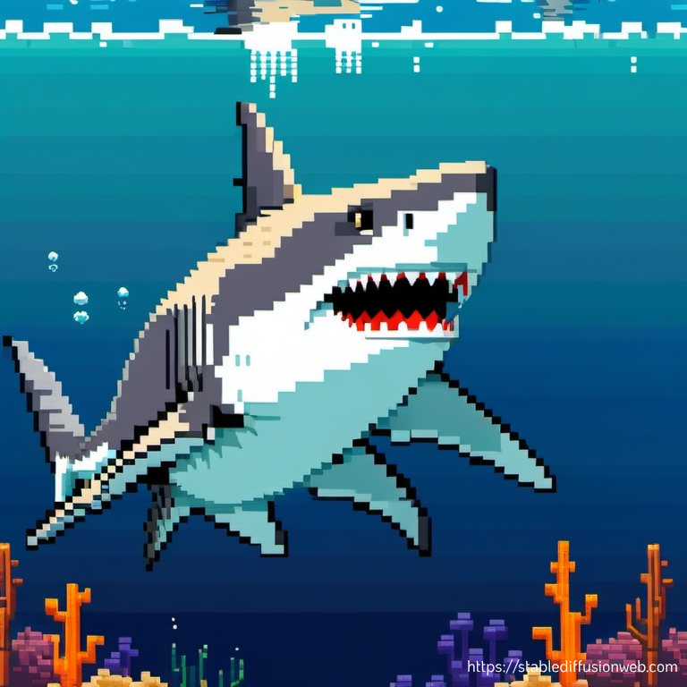

The Unknowns of the "White" Shark

Hiu makan apa saja?
Memahami tujuan konsumsi hiu putih, atau Carcharodon carcharias, dapat membantu untuk memahami penyebab konflik manusia-hiu dan mengembangkan strategi untuk perlindungan spesies tersebut. Para ilmuwan menemukan bangkai beberapa spesies ikan yang kerap hidup di dasar laut atau terkubur di pasir saat mereka memeriksa isi perut 40 remaja hiu putih yang mereka tangkap di lepas pantai timur Australia. Sekitar 32% ikan yang dikonsumsi hiu ini berasal dari laut tengah, disusul 17,4% ikan dasar, 14,9% ikan batoid seperti ikan pari, dan 5% ikan karang. Di sisi lain, mereka lebih jarang memakan cephalopoda seperti cumi-cumi dan sotong, serta hiu dan mamalia laut lainnya (Hebel, 2020).

Penelitian lainnya
Penelitian telah menunjukkan bahwa hiu lebih suka berburu mangsa yang lebih besar, misalnya lumba-lumba, meskipun kecenderungan ini mungkin hanya terjadi setelah hiu mencapai usia tertentu, atau sekitar 2,2 meter panjangnya. Dalam hal ini, nampaknya hiu yang lebih besar membutuhkan makanan yang lebih tinggi lemak untuk memberi mereka energi selama migrasi (Hebel, 2020).